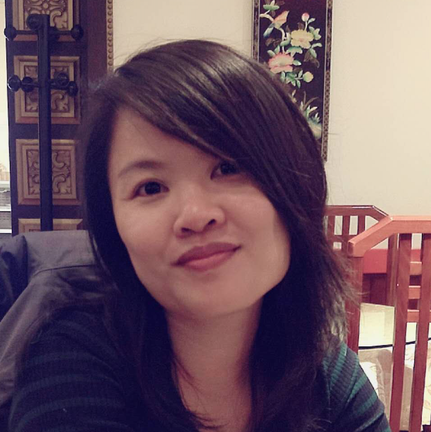

Hiya! I am Xuan, a philosopher turned software engineer based in London, UK.
My passion:
using tech to identify and solve problems more efficiently and more effectively.
My skills:
Fluent in JavaScript and Python, currently learning TypeScript and Elixir. With an academic background in philosophy, logic and linguistics, I enjoy exploring the syntactic differences among different programming languages.
With a forward-thinking mindset, I value good error messages and documentation. I write tests and accessible websites and applications.
Open-minded, funny, compassionate and thrive in team.